Effects & Shading#
Octarine offers a number of ways to change how the scene is rendered. They roughly fall into three categories:
- Per-object material settings: transparency, silhouette rendering, subsurface scattering and matcaps
- Lighting: environment maps
- Screen-space post-processing passes applied to the rendered image:
add_effect, ambient occlusion, outlines, depth of field and tone mapping
Most of what follows requires pygfx>=0.17 (which is what recent versions of Octarine install anyway).
Transparency (alpha modes)#
Whenever objects are semi-transparent, the renderer has to decide how to blend their colors with whatever is behind them. pygfx (>=0.13) handles this via per-material "alpha modes" and octarine.Viewer.set_alpha_mode provides a high-level interface to these:
>>> import octarine as oc
>>> v = oc.Viewer()
>>> v.add_mesh(mesh, name='bunny', alpha=0.5)
>>> # Set the alpha mode for all objects...
>>> v.set_alpha_mode('weighted_blend')
>>> # ... or only for specific ones
>>> v.set_alpha_mode('add', objects=['bunny'])
See pygfx.Material.alpha_mode (e.g. via help()) for the available modes. Note that Octarine will automatically pick a sensible alpha mode when you change an object's opacity: "add" for semi-transparent objects, "opaque" otherwise. If you need full control, you can always set material.alpha_mode on individual pygfx objects.
Silhouette rendering#
octarine.Viewer.set_silhouette enables Neuroglancer-style silhouette rendering for meshes: face-on regions become transparent while edges and creases are emphasized, giving an x-ray-like view of the mesh's outline.
>>> v = oc.Viewer()
>>> v.add_mesh(mesh, name='bunny')
>>> # Enable silhouette rendering for all meshes
>>> v.set_silhouette(2)
>>> # Adjust the strength (typical values are 1-8)
>>> v.set_silhouette(6)
>>> # Disable again
>>> v.set_silhouette(0)
Under the hood, fragments are multiplied by pow(1 - |dot(normal, view_dir)|, silhouette) - i.e. the silhouette exponent has the same semantics as Neuroglancer's "silhouette" property.
Use the objects parameter to apply the effect to only some meshes. Note that this only works for meshes with Phong-based materials - other objects are silently skipped.
You can also enable the effect for a mesh right when adding it:
>>> v.add_mesh(mesh, silhouette=2)
Subsurface scattering#
octarine.Viewer.set_subsurface makes meshes translucent: instead of stopping at the surface, light is allowed to bleed through it. Regions with a light behind them glow, and shading eases past the terminator rather than dropping off abruptly - the look of skin, wax, marble, leaves or thin neurites.
>>> v = oc.Viewer()
>>> v.add_mesh(mesh, name='bunny')
>>> # Enable scattering for all meshes (typical strengths are 0.5-2)
>>> v.set_subsurface(1.5)
>>> # Tune the look: a warm tint on a fairly thin object
>>> v.set_subsurface(1.5, scatter_color='#c04030', thickness=0.3)
>>> # Disable again
>>> v.set_subsurface(0)
Note how the thin parts - the ears, and the rim where the body turns away from the viewer - light up, while the bulk of the body stays neutral.
Two terms are added on top of the usual Phong shading:
| Parameter | Effect |
|---|---|
subsurface | Master strength; 0 disables the effect entirely |
scatter_color | The color light picks up on its way through the material |
thickness | How much material light has to cross, in [0, 1] |
distortion | How far the glow wraps around the silhouette, in [0, 1] |
falloff | Exponent of the glow; higher values tighten it around the light |
wrap | How far light bleeds past the terminator, in [0, 1] |
glow | A view-independent floor added to the transmission |
The scattering is strongest when a light sits behind what you are looking at, so it pairs well with turning the headlight off. It deliberately ignores shadows: light that scatters through an object is exactly the light that did not reach it directly.
Note
thickness is a constant across the mesh, not the real local thickness of the geometry, so the effect cannot on its own tell a thin part from a thick one. In exchange it needs no preprocessing and costs no extra render passes.
As with the silhouette, use the objects parameter to restrict the effect to some meshes, and note that it only works for meshes with Phong-based materials. The two effects compose, in either order.
You can also enable it right when adding a mesh, either as a strength or as a dict of the parameters above:
>>> v.add_mesh(mesh, subsurface=1.5)
>>> v.add_mesh(mesh, subsurface={'subsurface': 1.5, 'scatter_color': '#c04030'})
Matcap shading#
A matcap ("material capture") is a picture of a shaded sphere used as a lookup table: the surface normal - as seen from the camera - picks a point on that sphere and its color becomes the color of the pixel. Everything the sphere shows (the falloff, the highlights, the rim light) comes along with it, without a single light being evaluated.
This is a staple of scientific and sculpting viewers: surface shape reads exceptionally well, and the result can't end up under- or overlit.
>>> v = oc.Viewer()
>>> v.add_mesh(mesh, name='bunny')
>>> # Apply a matcap to all meshes
>>> v.set_matcap('clay')
>>> # ... or only to some
>>> v.set_matcap('jade', objects=['bunny'])
>>> # Back to the regular lit materials
>>> v.set_matcap(None)
Octarine generates its matcaps procedurally, so the presets are recipes rather than images:
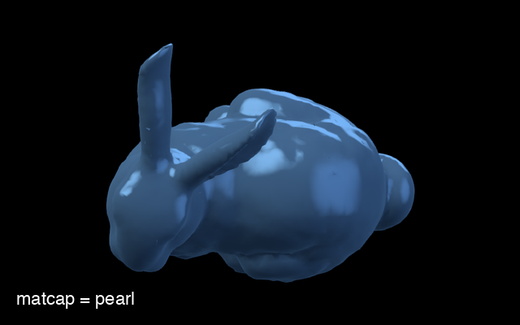 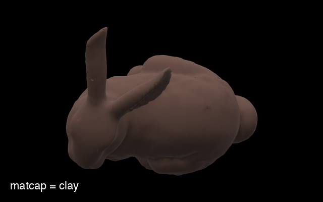 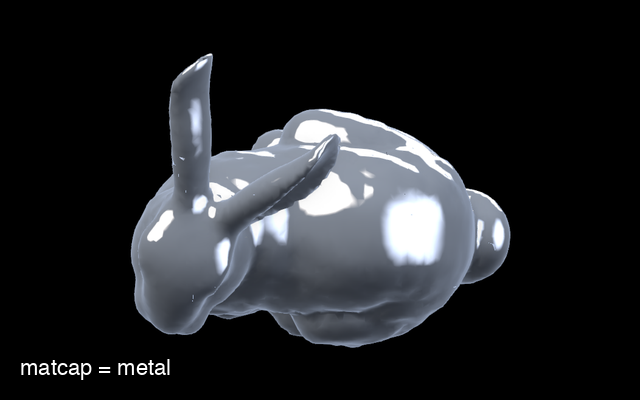 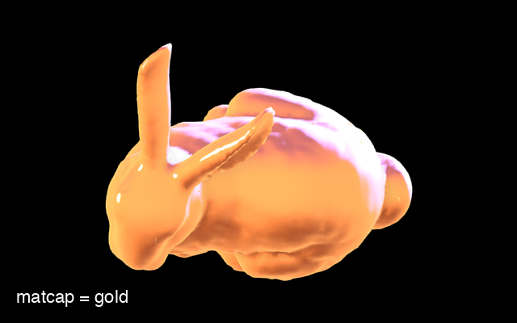 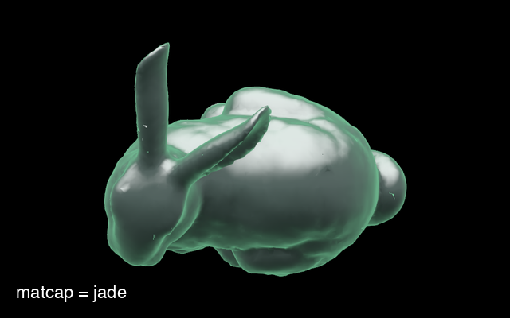 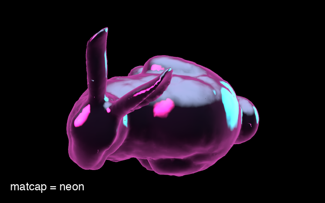 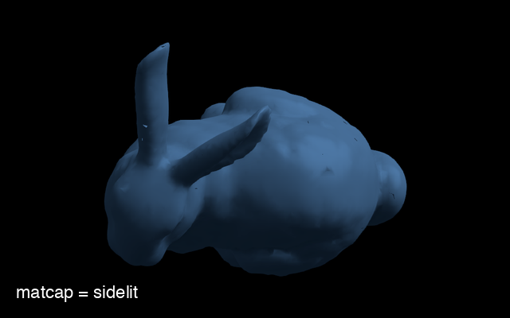 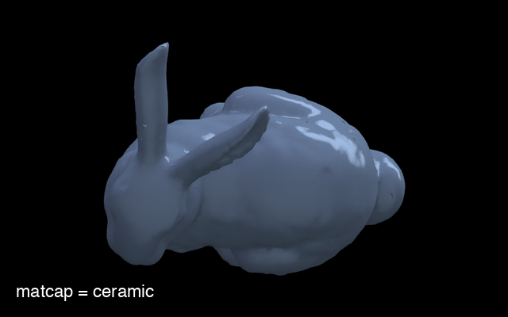 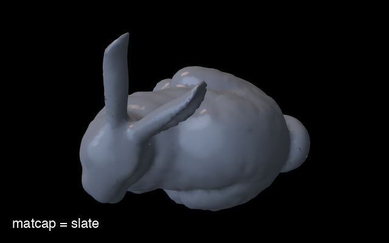 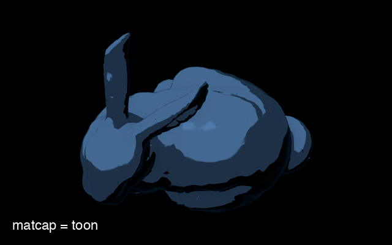 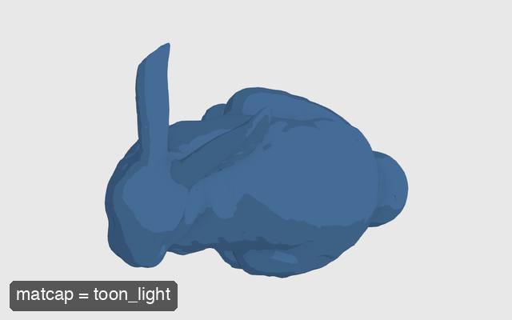
| Preset | Description |
|---|---|
pearl | Neutral glossy white; shape without a color (default) |
clay | Matte modelling clay; no highlights, pure form |
metal | Brushed steel; hard highlight and a strong rim |
gold | Warm polished metal, lit by a low sun |
jade | Deep green stone with a translucent glowing rim |
neon | Near-black with magenta/cyan edges; for dark scenes |
sidelit | Plain grey under one big side light; very readable |
ceramic | Cool glaze with long strip-light reflections |
slate | Muted blue-grey ceramic with a small warm key |
toon | Cel shading: flat tones and an ink outline |
toon_light | Pale cel shading, for light backgrounds |
The last five are reproductions of matcaps that ship with Blender's Workbench renderer (basic_side, ceramic_lightbulb, ceramic_dark, toon_dark and toon_light). Their parameters were fitted to the originals rather than copied from them, so they are as close as this model gets, not pixel-exact matches.
Each preset is a surface description (base_color, specular, shininess, rim, rim_color, rim_power, and bands / band_softness / edge / edge_width for the cel-shaded ones) plus the environment its sphere is lit with. That is usually the name of a shared environment - so a matcap and an environment built from the same preset agree on where the light comes from - but it can equally be a lighting rig of its own, which is what the Blender-derived presets use. Every property can be overridden:
>>> v.set_matcap('pearl', base_color='#b0c4de', rim=0.6)
>>> v.set_matcap('metal', environment='sunset')
The tint parameter controls how much of an object's own color survives. Tinting keeps differently colored objects distinguishable, which is why the neutral presets ask for it and the strongly colored ones don't:
>>> v.set_matcap('pearl', tint=1) # objects keep their colors
>>> v.set_matcap('pearl', tint=0) # everything takes the matcap's color
bands quantizes the shading into that many flat tones, which is what turns a smooth gradient into cel shading, and edge draws an ink line around the silhouette. Both work on any preset:
>>> v.set_matcap('jade', bands=4, band_softness=0, edge=0.8)
You can also hand it an image directly - an (N, M, 3) or (N, M, 4) array of floats (linear) or uint8 (sRGB), i.e. what any off-the-shelf matcap PNG looks like once loaded:
>>> import imageio.v3 as iio
>>> v.set_matcap(iio.imread('some_matcap.png'))
A matcap can be set when adding a mesh, too:
>>> v.add_mesh(mesh, matcap='clay')
Note
A matcap replaces the material, so it can't be combined with silhouette, subsurface or a custom shader. Because the shading is locked to the camera it also turns with the view, and matcapped meshes take no part in shadows, ambient occlusion or environment lighting.
Environment lighting (IBL)#
A handful of lights leaves surfaces looking flat: every pixel is lit from two or three directions and from nowhere else. Real objects are lit from every direction - sky, ground, the walls of the room - which is what gives them their gradients and their reflections. Image-based lighting captures that by wrapping the scene in an environment map and treating the whole thing as a light source.
octarine.Viewer.set_environment does this with environments it synthesizes rather than HDRI photographs, so nothing has to be downloaded: each one is a sky gradient plus a few "softboxes".
>>> v = oc.Viewer()
>>> v.add_mesh(mesh)
>>> # Light the scene with the default studio environment
>>> v.set_environment('studio')
>>> # For the full effect, show it and tone map the result
>>> v.set_environment('sunset', show_background=True)
>>> v.set_tonemapping('aces')
>>> # Back to the plain lights
>>> v.set_environment(None)
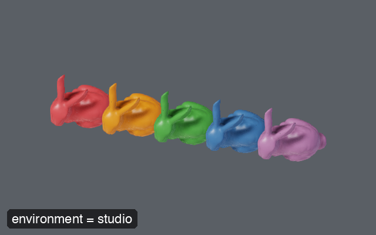 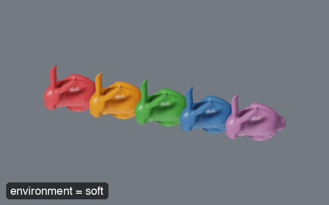 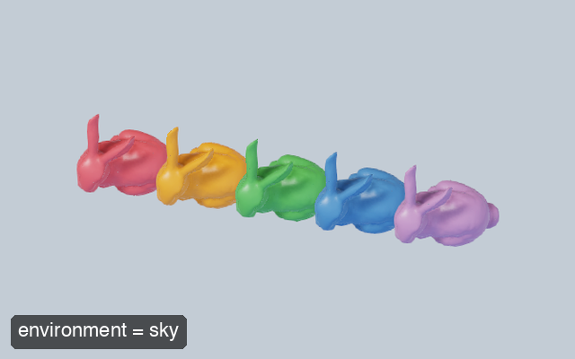 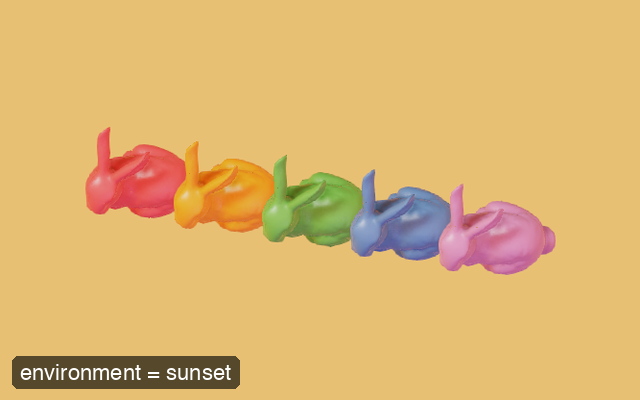 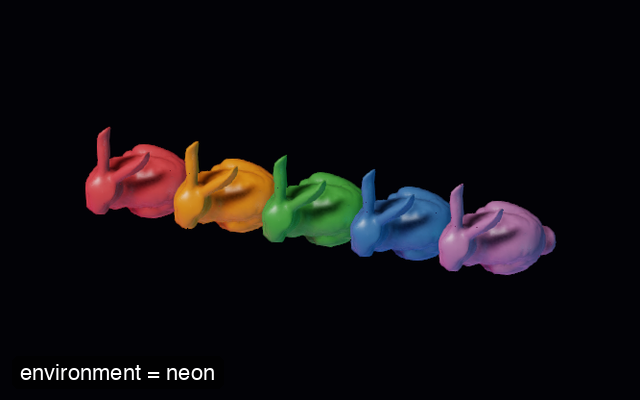
| Preset | Description |
|---|---|
studio | Neutral three-point studio; the all-rounder (default) |
soft | Overcast dome; near-shadowless, for figures |
sky | Outdoor daylight; blue zenith, warm sun |
sunset | Low warm sun against a violet sky; dramatic |
neon | Near-black room with magenta/cyan rims; dark scenes |
The most important parameters:
roughness/metalness: the surface the environment is reflected in. This is what makes or breaks the look - atroughness=0.4(the default) the environment shapes the surface visibly; by0.8it has flattened out again.metalness=1makes an object take its color entirely from its reflectionsrotation: turns the environment about the vertical axis, which moves the highlights without having to redefine anythingshow_background: also use the environment as the backdrop, so that reflections and background agreeintensity: overall brightness of the environmentdim_lights: how far the scene's own lights are dimmed while the environment is on (default 0.4); an environment lights a surface from every direction at once, so leaving them at full strength washes the image out
Presets are starting points - sky, horizon, ground, gradient and the lights themselves can all be overridden:
>>> v.set_environment('studio', rotation=90, intensity=1.5)
>>> v.set_environment('neon', roughness=0.15, metalness=0.9)
>>> v.set_environment('soft', ground='#402010')
A light is a disc of angular radius angle degrees that fades out over the outer softness fraction of itself. Giving it a length (also in degrees) stretches it into a tube - a strip light - and roll turns that tube about its own axis; a glossy surface then shows the long drawn-out streak a real fixture leaves rather than a round dot:
>>> v.set_environment('studio', roughness=0.15, lights=[
... dict(direction=(-0.3, 0.9, 0.3), color='#ffffff', intensity=20,
... angle=3, length=90, roll=0, softness=0.4),
... ])
Note
Only physically-based (shader="standard" or "physical") meshes can be lit by an environment in full, so by default the plain Phong meshes Octarine creates are converted to PBR ones - pass pbr=False to prevent that. Meshes with a silhouette, subsurface or matcap material keep theirs and receive only a reflection on top of their normal shading. Everything is restored by set_environment(None).
Tip
Environments produce values well above white, which are otherwise simply clipped. Pair this with tone mapping to see what they are actually doing.
Post-processing effects#
octarine.Viewer.add_effect adds a post-processing pass to the renderer - i.e. an effect applied to the fully rendered image:
>>> v = oc.Viewer()
>>> v.add_mesh(mesh)
>>> # Add Eye-Dome Lighting
>>> v.add_effect('edl')
>>> # Call again to adjust parameters of an existing effect
>>> v.add_effect('edl', strength=8)
>>> # Remove the effect again
>>> v.add_effect('edl', disable=True)
Currently supported effects:
| Effect | Description | Parameters |
|---|---|---|
"edl" | Eye-Dome Lighting: darkens edges based on depth differences, enhancing depth perception for complex geometries. | strength (default 5), radius, depth_edge_threshold |
"noise" | Adds noise to the image. | noise (default 0.1) |
"fog" | Adds fog based on the depth buffer. | color (default "#fff"), power (default 1) |
"depth" | Renders scene depth as shades of grey (near = dark, far = light), normalized to the visible geometry. With overlay=True the objects' own colors are kept and darkened with distance instead (depth cueing). | overlay (default False), strength (default 0.9) |
"ao" | Screen-space ambient occlusion: darkens creases, cavities and contact points. See below. | radius, intensity, bias, samples, power, blur, debug |
"outline" | Draws a line around silhouettes and along creases. See below. | color, thickness, depth_threshold, normal_threshold, debug |
"tonemap" | Compresses the high dynamic range image into what the display can show; also the exposure control. See below. | mode, exposure, white_point |
"normal" | Renders normals reconstructed from the depth buffer. | - |
"bloom" | Physically-based bloom: makes bright regions glow. | bloom_strength, max_mip_levels, filter_radius, use_karis_average |
Passes run in a fixed order, whatever order you switch them on in: ambient occlusion, then outlines, then lens and image effects (depth of field, bloom, fog, ...), then tone mapping, and finally pygfx' own anti-aliasing. That way a depth-of-field blur blurs the occlusion and the outlines along with everything else, and the anti-aliasing sees values that have already been brought into range.
See the octarine.Viewer.add_effect reference for details on the individual parameters.
Here is what these effects look like (click to enlarge; the bloom example uses bloom_strength=0.5 to make the effect more obvious):
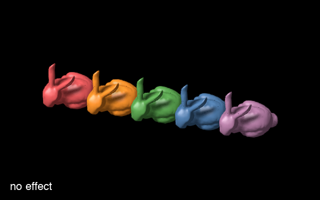 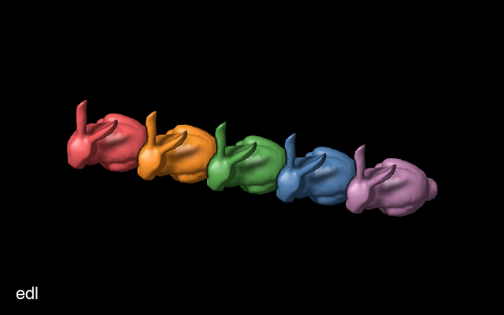 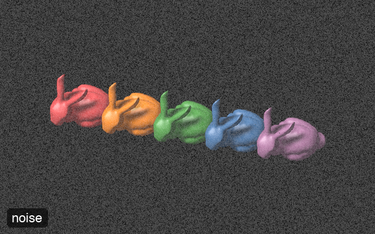 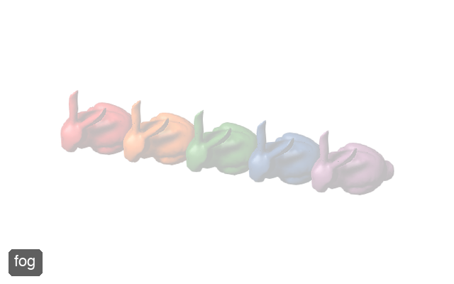 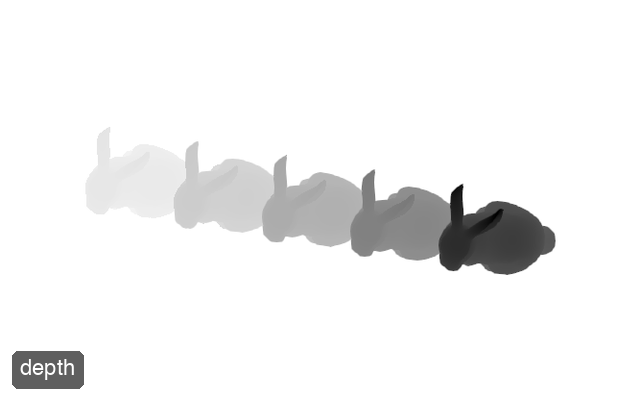 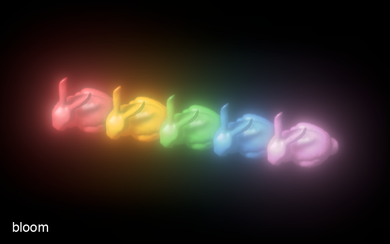
Ambient occlusion#
Ambient light is applied uniformly, which leaves creases, cavities and the points where objects touch looking flat. octarine.Viewer.set_ambient_occlusion estimates how much of the surrounding hemisphere is blocked at each pixel and darkens the image accordingly:
This is on by default (with a radius derived from the scene) - use set_ambient_occlusion to tune or disable it:
>>> v = oc.Viewer()
>>> v.add_mesh(mesh)
>>> # The radius is what makes or breaks the effect - set it explicitly
>>> # if the automatic one does not suit
>>> v.set_ambient_occlusion(radius=500, intensity=0.8)
>>> # Disable again
>>> v.set_ambient_occlusion(False)
>>> # ... or start without it in the first place
>>> v = oc.Viewer(ambient_occlusion=False)
The parameters:
radius: how far to look for occluders, in world units. This is the one parameter that has to match the scene - too small and the effect disappears, too large and it turns into a dark haze. Defaults to 4% of the diagonal of the scene bounds, kept up-to-date as objects are added or removed; passing a value pins the radius to itintensity: strength of the darkening, from 0 to 1bias: occluders closer to the surface than this fraction ofradiusare ignored; raise it if flat surfaces darken themselves, lower it (down to 0) for more contrast in tight creasessamples: hemisphere samples per pixel (default 16); more samples mean less noise at a higher costpower: exponent applied to the occlusion;> 1restricts the effect to the darkest areas,< 1spreads it outblur: radius of the bilateral blur that removes the sampling noisedebug: render the occlusion itself as greyscale - the quickest way to find aradiusthat suits the scene
>>> # What is the effect actually seeing?
>>> v.set_ambient_occlusion(debug=True)
Occlusion is reconstructed from the depth buffer, which has two consequences worth knowing:
Note
Like the other post-processing effects this is a screen-space effect: it applies to the whole rendered image (including overlay elements such as messages), and objects that don't write depth (e.g. meshes with a transparent alpha mode) neither cast nor receive occlusion.
Note
Surface orientation is reconstructed from neighbouring depth values, which works well for meshes and volumes but not for thin structures - points, lines and skeletons have no meaningful surface to occlude. For those, add_effect('edl') is the better tool: it darkens by depth difference alone and needs no normals.
The pass costs well under a millisecond per frame at the default sample count, and runs before the anti-aliasing and any depth of field.
Outlines#
octarine.Viewer.set_outline draws a line wherever the geometry has an edge - around the silhouette of each object, and along the creases within it - the way a technical illustration would. Beyond looking good, this does real work in a crowded scene: overlapping objects of similar color become individually readable, because every one of them is now bounded by a line.
>>> v = oc.Viewer()
>>> v.add_mesh(mesh)
>>> # Enable with default settings (a 1px black line)
>>> v.set_outline()
>>> # A thicker, softer line - and silhouettes only
>>> v.set_outline(color='#0008', thickness=2, normal_threshold=0)
>>> # Disable again
>>> v.set_outline(False)
The parameters:
color: color of the outline. Its alpha channel doubles as the strength of the effect, so"#0004"gives a subtle line rather than a hard one. White works well on dark backgrounds, black on light onesthickness: width in physical pixels; above about 4 it starts to look chunky rather than drawndepth_threshold: how far a neighbouring pixel has to lie off the surface under the current one to count as a separate object, relative to its distance from the camera. Lower it to outline shallower steps, raise it if surfaces get outlined across their interiornormal_threshold: how sharply the surface has to fold to count as a crease, as1 - cos(angle)(0.3 is roughly 45°). 0 outlines silhouettes onlydebug: render the detected edges as white on black - the quickest way to tune the two thresholds
>>> # What is the effect actually seeing?
>>> v.set_outline(debug=True)
Rather than comparing raw depth values, the pass asks how far each neighbouring pixel lies from the tangent plane of the surface under the center pixel. On a smooth surface that distance stays tiny however steeply the surface is tilted away from the camera, which is what keeps floors and other grazing surfaces from being outlined along their whole length.
Note
Like the other post-processing effects this is a screen-space effect: it applies to the whole rendered image (including overlay elements such as messages), and objects that don't write depth (e.g. meshes with a transparent alpha mode) are neither outlined nor occlude an outline.
Depth of field#
octarine.Viewer.set_depth_of_field adds a photographic focal blur: objects near the focal plane are rendered sharp while everything closer or farther is progressively blurred.
>>> v = oc.Viewer()
>>> v.add_mesh(mesh)
>>> # Enable with default settings: continuously auto-focus on
>>> # whatever is at the center of the view
>>> v.set_depth_of_field()
>>> # Stronger blur, eased focus transitions
>>> v.set_depth_of_field(aperture=200, smooth=True)
>>> # Fix the focal plane at a given distance from the camera
>>> v.set_depth_of_field(focus=1000)
>>> # Disable again
>>> v.set_depth_of_field(False)
The most important parameters:
focus: distance of the focal plane from the camera in world units; ifNone(default) the effect continuously auto-focuses on whatever is at the center of the view (over empty space the image is left sharp)aperture: blur strength - the blur radius in physical pixels of a point at 100% relative defocus; typical values are 50-300max_radius: upper limit for the blur radius in physical pixelssmooth: if truthy, autofocus changes are eased over approximately this many seconds (True= 0.2s) instead of snapping instantlysnap_radius: autofocus search radius in physical pixels around the view center - the effect focuses on the object closest to the view center within that radius
Note
Depth of field is a screen-space effect: it applies to the entire rendered image (including overlay elements such as messages), and objects that don't write depth (e.g. meshes with a transparent alpha mode) are blurred by whatever is behind them.
Tone mapping and exposure#
The scene is rendered into a floating point buffer, so colors aren't limited to [0, 1]: highlights, emissive surfaces and anything lit by an environment map routinely go well above white. Without tone mapping those values are simply clipped, which turns bright regions into flat white blobs and skews their color - a warm highlight reads as pure red once the red channel clips and the others haven't yet.
octarine.Viewer.set_tonemapping maps that open-ended range onto what the display can show, rolling the highlights off gradually instead:
>>> v = oc.Viewer()
>>> v.add_mesh(mesh)
>>> v.set_environment('studio') # gives it something to roll off
>>> v.set_tonemapping('aces')
>>> # `exposure` is the photographic exposure control
>>> v.set_tonemapping('filmic', exposure=1.5)
>>> v.exposure = 2.0 # or set it on its own
>>> # Back to plain clipping
>>> v.set_tonemapping(None)
Here is the same (deliberately over-exposed) scene through each curve - note how the highlights on the bunnies come back:
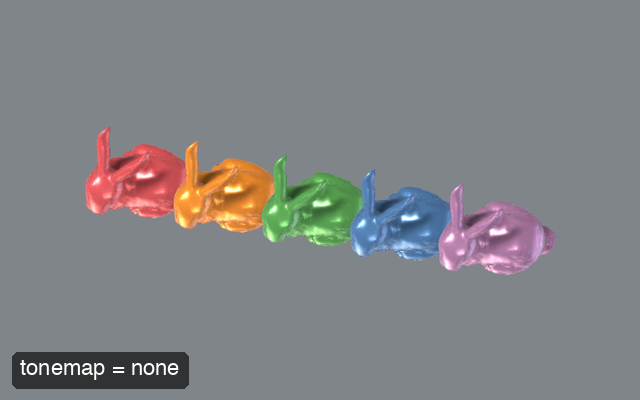 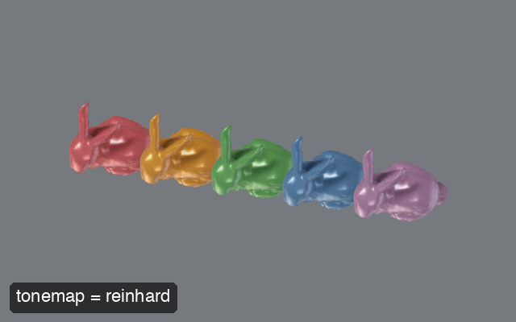 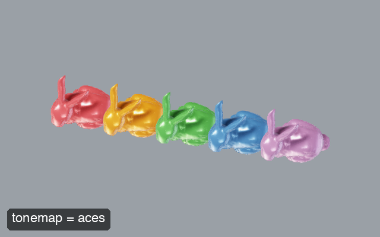 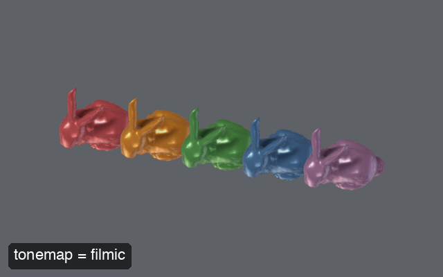
| Mode | Description |
|---|---|
"aces" | A fit to the ACES filmic response. Contrasty and saturated; the usual choice (default) |
"filmic" | Hable's "Uncharted 2" curve. Like ACES but holds on to more shadow detail |
"reinhard" | The gentlest option. Stays closest to the original colors, at the cost of looking flatter |
"none" | Clip only, i.e. exposure control on its own |
exposure scales the image before the curve is applied: 2 is one stop brighter, 0.5 one stop darker. Setting octarine.Viewer.exposure switches tone mapping on if it isn't already - without a curve to roll the highlights off, raising the exposure would only clip them.
white_point (used by "reinhard" and "filmic") is the input value that maps to white; raising it holds on to more highlight detail and darkens the image overall.
Note
Tone mapping runs last - after effects such as bloom, which want the untouched high dynamic range values, and before pygfx' own anti-aliasing and gamma handling, which want display-referred ones.
Effects in the GUI#
All of the above - plus shadows and eye-dome lighting (see post-processing effects) - can also be toggled and tuned interactively from the "Effects" tab of the control panel. Each effect gets its own section: the checkbox switches it on, the arrow next to it expands the parameters.
Under the hood#
The custom shaders and render passes powering these features live in the octarine.shaders module - see the API reference. The module is imported lazily and requires pygfx>=0.17.